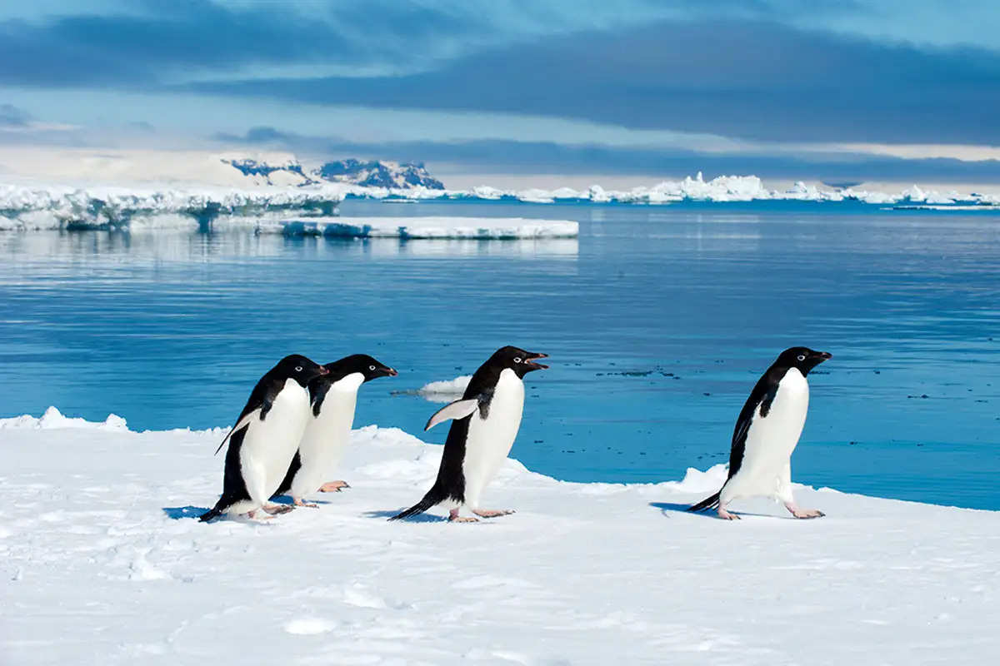
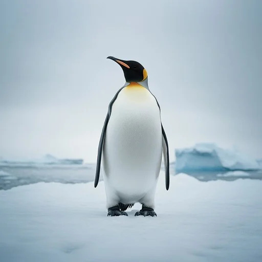

Pip (Penguin)
From the fictional encyclopedia
Pip is a fictional penguin known for his role as a listener in a penguin colony. While his job appeared insignificant at first, it ultimately proved essential to the survival of younger members of the colony.

A bustling penguin colony on the ice

Pip standing at his listening post
The dangerous crack that Pip detected
Overview
In Pip's colony, every penguin had a job that helped the group survive. Some hunted for food, others protected eggs, and some watched for predators.
Pip's job was different. He listened for sounds that did not belong, especially those coming from the ice itself.
Role in the Colony
Responsibilities
- Standing near cracks in the ice
- Listening for unfamiliar sounds
- Warning the colony of danger
Daily Routine
- Morning patrol of ice edges
- Afternoon listening sessions
- Evening colony reports
Many penguins considered this an "in-between job" because it did not involve visible action like hunting or guarding.
Notable Incident
One afternoon, Pip heard a soft, unfamiliar sound coming from beneath the ice. Although it was not loud, Pip recognized that it did not belong.
Click each step to mark it complete:
- Pip left his listening post
- He alerted the rest of the colony
- The ice cracked moments later
The crack formed where younger penguins had been playing earlier, preventing what could have been a serious accident.
Legacy
After this event, Pip's role was no longer dismissed. His story highlights how important quiet and patient work can be.
The colony came to understand that listening is sometimes the most important task of all.
References
This article is part of a fictional narrative and is not based on real events.